PES
University
Marketing a new BBA Sports Management course through the mediums best suited to reaching prospective students and encouraging enrolment or enquiries to the admissions department.
Selling a category, not a course.
PES University was introducing a BBA in Sports Management into a market that did not yet know the degree existed. Nobody was searching for it. There was no shortlist to get onto, no competitor to be compared against, and no alumni to point at — the course had never run.
I came in as design consultant, with a scope that ran across press, outdoor, social and the course landing page.
Two audiences, opposite objections, one campaign.
The student had to be made to want it. The parent had to be reassured it was a real career with real employment at the end. Those are not the same message, and they are not read in the same place: the parent reads the newspaper, the student sees Instagram.
Running two campaigns would have been honest to the audiences and fatal to recognition — a course nobody has heard of cannot afford to appear as two unrelated things.
One cast of athletes, carried across every surface.
Rather than split by audience, I split by register and held the imagery constant. The same athletes appear in the newspaper advert, the brochure, the standee, the billboard, the feed and the landing page. The copy shifts — more explanatory in print, more immediate on social — but the faces do not.
The cost of that is real: commissioning a shoot ties the campaign to one set of images and one season, and reshooting for a later intake means either new talent or visibly dated assets. I took it because recognition was the scarce resource. A student who passes the billboard on the way to college should arrive at the landing page already knowing they have seen this before.
A single thread from billboard to browser.
The system covers thirteen spreads: photography, newspaper advert, brochure and spreads, standee, billboard, social and the course landing page in desktop and tablet. Because the photography is shared, each surface inherits the last one’s recognition instead of spending its own budget building it.
Thirteen spreads, front to back.

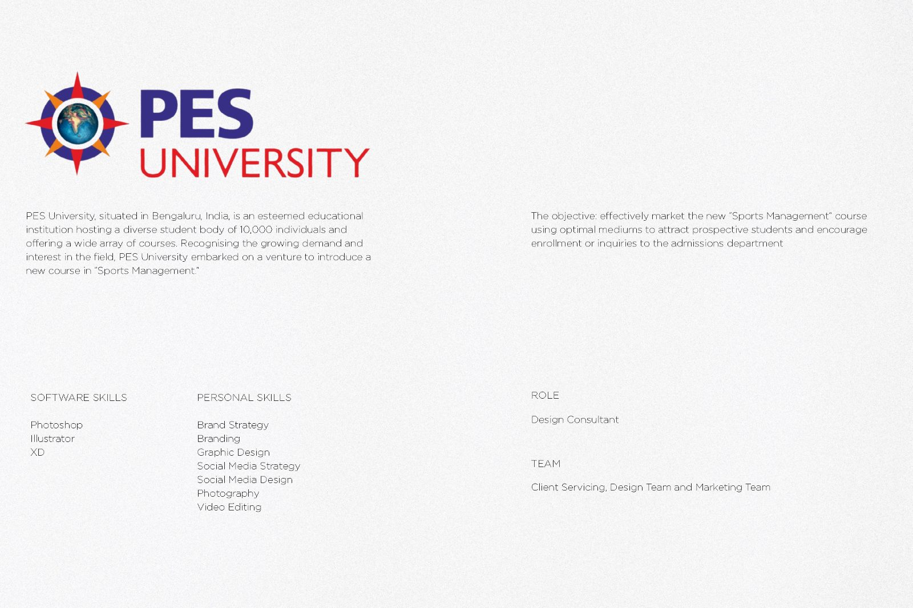
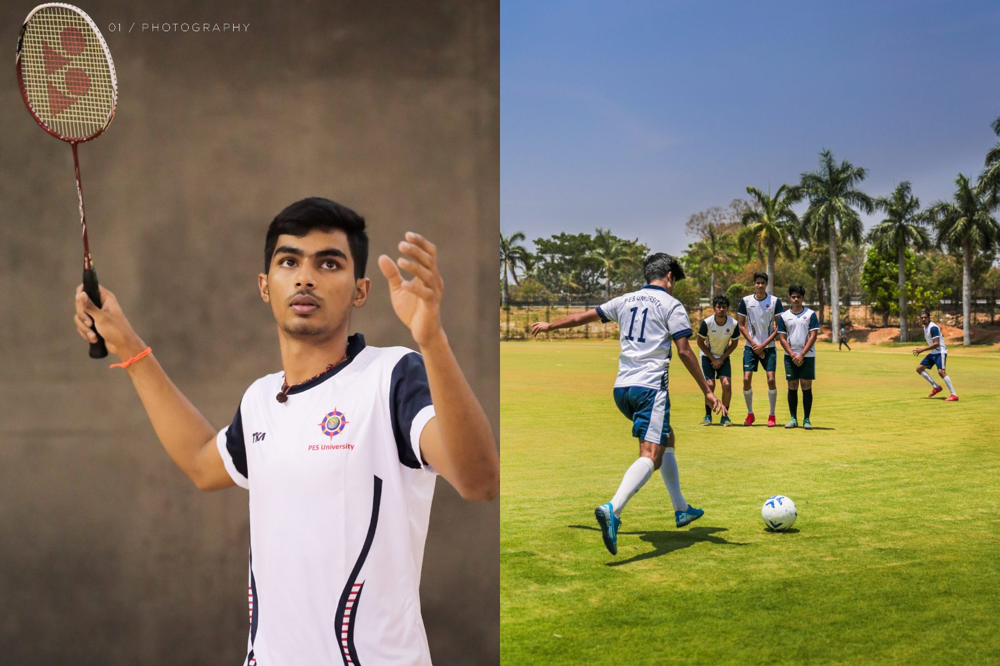
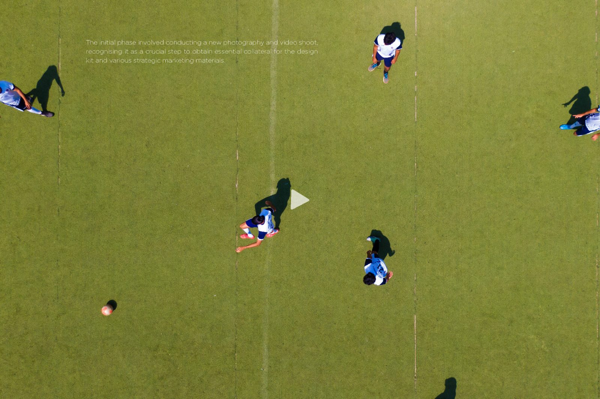
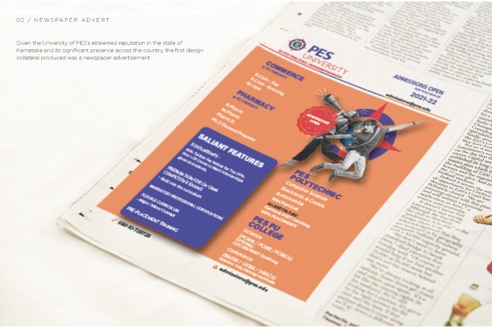
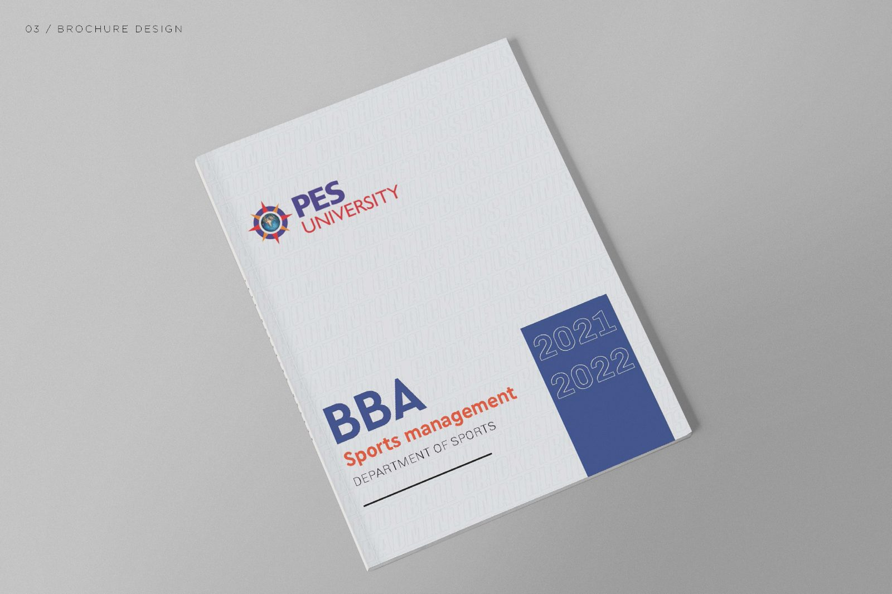
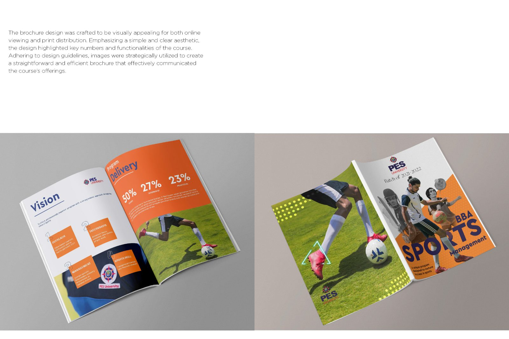
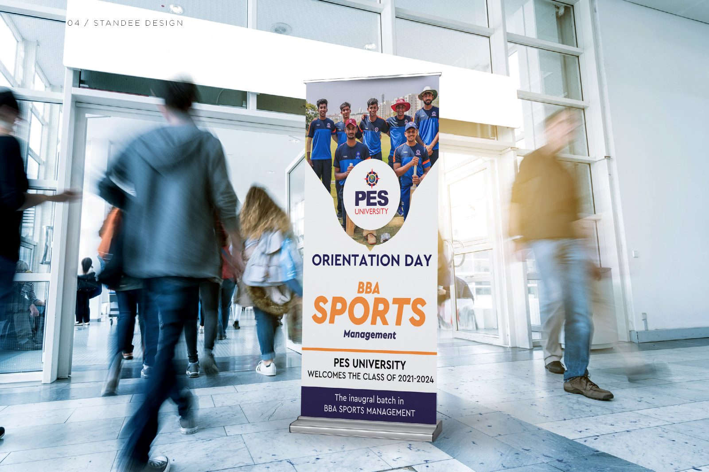
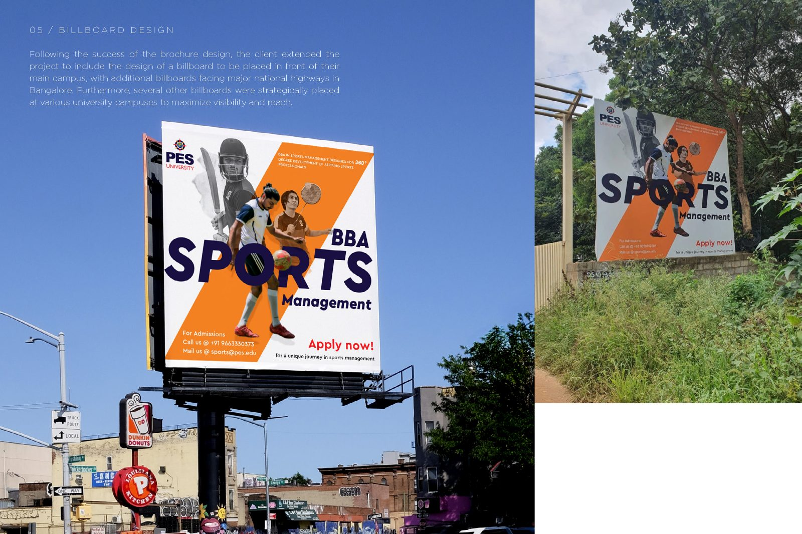
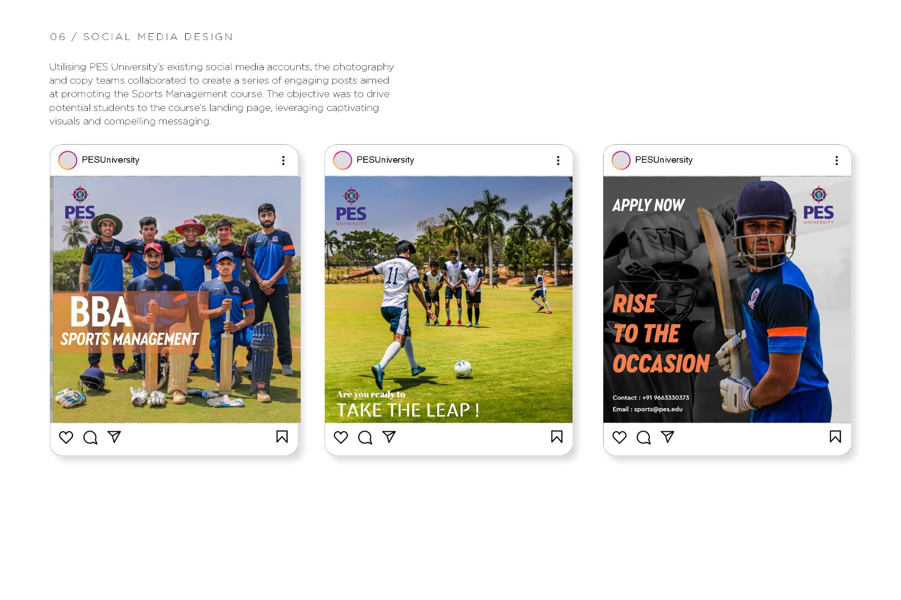
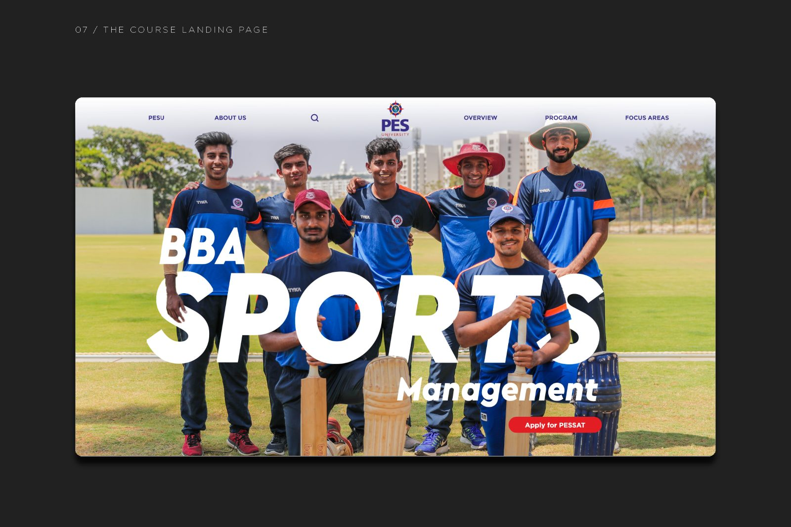
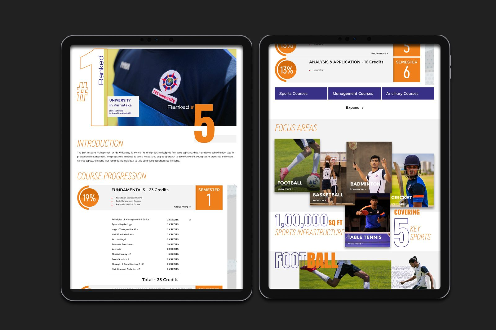
What shaped the work as much as the brief did.
No proof to sell. A first-intake course has no graduates, no placement record and no rankings. The campaign could only sell the premise and the institution’s existing standing, which is why the photography had to carry conviction that the copy could not claim.
An admissions window, not a launch date. Everything had to be in market before the enrolment cycle closed, which removed the option of testing routes sequentially.
Media bought across formats bought separately. Newspaper, outdoor and social were not one buy, so the assets had to work when only some of them were seen.
The artefacts are documented; the enrolment numbers are not.
The campaign shipped across all seven surfaces. What I cannot show is the conversion — enquiries to the admissions department, applications, enrolled students — because it was not tracked back to the campaign and I was not in a position to instrument it.
I would rather state that than attach a number I cannot stand behind. What is verifiable is the coverage and the coherence: one cast, seven surfaces, one recognisable campaign.
What I would do differently.
I would put a distinct enquiry path on each medium — a different landing URL or code for print, outdoor and social. It costs nothing at design time and it is the difference between a campaign you can describe and one you can prove.
I would also shoot for two intakes rather than one. The marginal cost on the day is small, and it would have kept the system alive for a second cycle instead of ageing with the first.